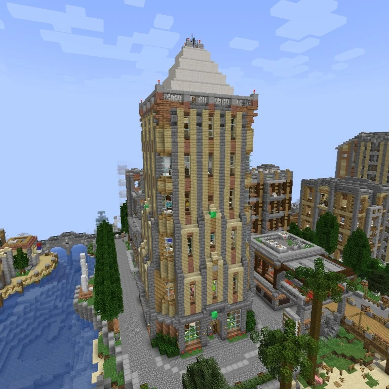
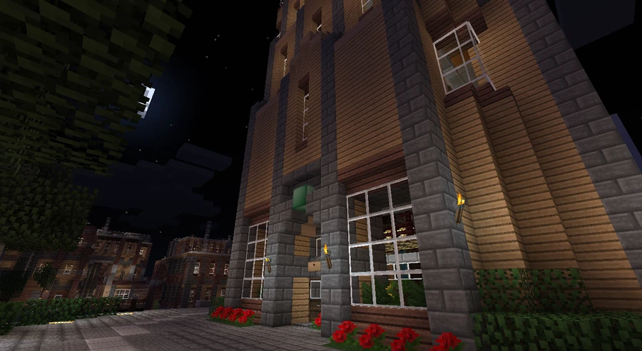

The Broville Beat
-4, 67, 1763
A local newspaper whose archives Edward Page consults to understand Brosco’s disappearance.
The newspaper and its headquarters
The Broville Beat is a local newspaper presented as Broville’s leading news organization. It also owns Brok! Magazine, covering the latest developments in popular culture. The newspaper is known for sensational headlines, clippings scattered throughout the city, and investigations into local mysteries, sometimes at a risk to those documenting them. The publication also shared news through its own blog.
Its headquarters occupy the building at 11 Boardwalk Ave., at −4, 67, 1764, on the edge of the Arts District beside the beach, with an ocean view.



Organization and staff
- GOBOGUY Apricot: chief executive officer, or CEO, occupying the main office on the top floor.
- Golonka: article aligner.
- Vayeate_oz: viral marketer.
- Sburc: expert jokester.
- Descole: world generator.



The newspaper as an archive
Edward Page searches for news about the former station and finds records of scientist Daniel Brosco’s disappearance; the scientist is also called Dan Brosco. Clippings numbered 1 through 5 can be consulted at −507, 70, 2228, by the bookshop.
This research makes the newspaper one of the internal sources the characters themselves use to reconstruct the building’s and the scientist’s past.
Original documents
Read the in-world texts behind this article. Expand a title to read its full transcription; some texts reveal clues and endings.
Read original document — Old news articleBroville Beat · 2 pages · Spoilers
Page 1
Page 2
Book recorded at -695 70 2287. Source: SPOILER_bookOutput.txt. Original spelling retained.
See also
Sources and references
- v11.4.4 maps, signs, books and items World records
- The Broville Beat · Broville Wiki Community archive
- Build-team coordinate list — Beat (warp 572) Map
Text adapted and expanded from The Broville Beat (contributors and history, revision 5031). Adapted text is available under CC BY-SA 3.0.